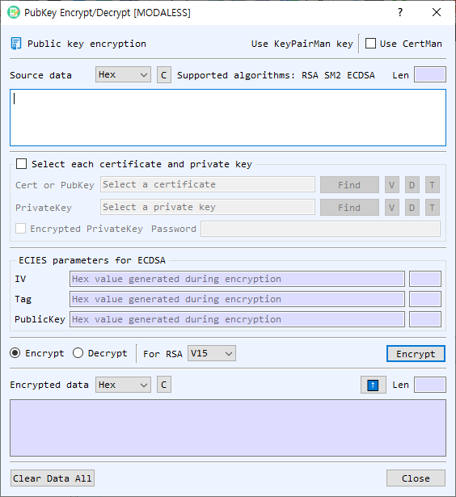

Public-Key Encrypt/Decrypt Dialog Guide
The Public-Key Encrypt/Decrypt dialog encrypts data with a public key and decrypts it with the matching private key. It supports RSA, SM2, and ECDSA-based ECIES operations.

Figure 1. Public-Key Encrypt/Decrypt dialog. Choose an operation, provide the data and corresponding key, then run it to view the result.
Screen Areas
- Input Data — Enter the plaintext to encrypt or ciphertext to decrypt. Select its representation as Hex, String, or Base64. The dialog shows the input length; C clears the input.
- Supported algorithms — RSA, SM2, and ECDSA. For ECDSA, this dialog uses ECIES encryption and decryption.
- Key source — Use a key managed by KeyPairMan or enable Use CertMan to choose certificate/key material from CertMan. The required key depends on the selected operation.
- Select each certificate and private key — Enable this option to specify a certificate or public-key file and a private-key file directly. Use Find to browse for a file. The adjacent V, D, and T controls view information, decode the file in the main BerEditor window, and show the key type, respectively.
- Encrypted PrivateKey / Password — Enable this when the selected private-key file is password protected, then enter its password. This applies when reading the private key for decryption.
- ECIES parameters — IV, Tag, and the other PublicKey value carry the ECIES parameters. On encryption, the dialog generates these values; on decryption, provide the values associated with the ciphertext. Values are hexadecimal.
- Encrypt / Decrypt — Select the operation. Encryption uses a public key; decryption uses the matching private key.
- RSA scheme — Choose V15 or OAEP for RSA. This setting does not select an SM2 or ECIES mode.
- Encrypt / Decrypt button — Runs the selected operation. The button label follows the selected mode.
- Output Data — Displays the result in the selected output representation (Hex, String, or Base64) and shows its length. C clears the result. The up-arrow copies the result into Input Data and sets the input representation to match the output.
- Clear Data All — Clears the dialog's data and related values. Close closes the dialog.
Encrypt Data
- Select Encrypt.
- Enter the plaintext in Input Data and choose its representation.
- Choose the public key or certificate source. If using individual files, enable Select each certificate and private key and select the certificate or public-key file.
- For RSA, select V15 or OAEP. For SM2 or ECDSA, use the appropriate public key; RSA scheme selection does not apply.
- Select Encrypt. The encrypted result appears in Output Data.
- For ECIES, record the generated IV, Tag, and other PublicKey value along with the ciphertext. Decryption requires these parameters.
Decrypt Data
- Select Decrypt.
- Enter the ciphertext and choose its representation.
- Select the corresponding private key. If it is password protected, enable Encrypted PrivateKey and enter the password.
- For RSA, select the same padding scheme used to encrypt the data. For ECIES, enter the associated IV, Tag, and other PublicKey values in hexadecimal.
- Select Decrypt. The plaintext appears in Output Data.
Notes
- Encryption and decryption must use a matching public/private key pair and compatible algorithm parameters.
- Keep the ECIES parameters with the ciphertext; the ciphertext alone is insufficient for this dialog's ECIES decryption workflow.
- The output representation controls how the result is displayed, not the cryptographic operation. Use the up-arrow to pass a result back as input.
- The dialog warns when input data, a required key, or a required password is missing, or when the selected data cannot be decoded in the chosen representation.